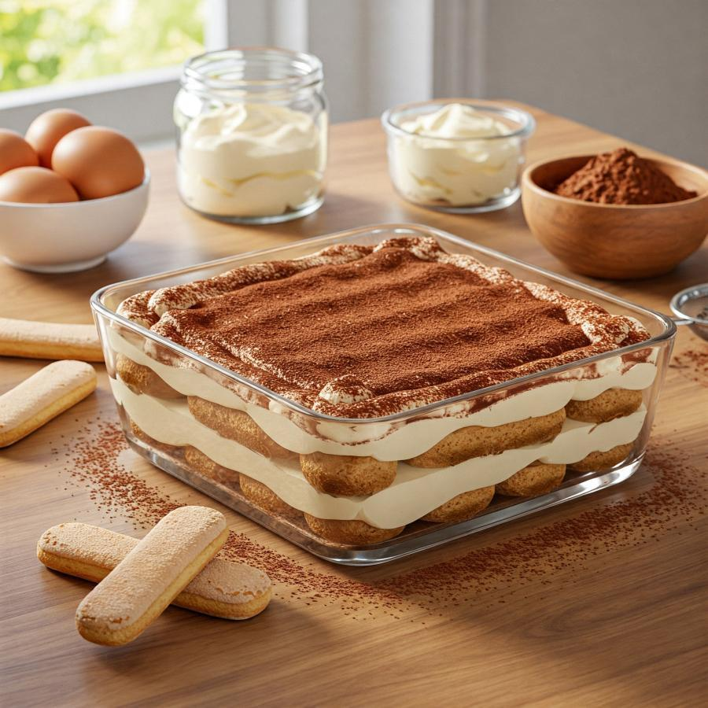

Home
Tiramisu

Description
In addition to being a delicious dessert, tiramisu offers the perfect segue when trying to steer the Valentine's dinner conversation towards spicier subjects. This heady, mood-elevating concoction is rich and deeply satisfying yet remarkably light in texture. Yes, you can use regular cream cheese, but mascarpone is far superior.
Ingredients
- 1 pound mascarpone cheese
- 1 cup white sugar
- 2 tablespoons amaretto liqueur, or more to taste
- 1 cup heave cream
- 1 cup cold espresso
- 24 ladyfingers, lightly toasted
- 2 (1 ounce) squares unsweetened chocolate, divided
Steps
- Whisk mascarpone cheese, sugar, and amaretto liqueur together in a bowl until smooth.
- Beat cream in a glass or metal bowl until soft peaks form. Lift your beater or whisk straight up: whipped cream should form soft mounds rather than a sharp peak. Fold whipped cream into mascarpone mixture. Pour espresso into a separate bowl.
- Dip 12 ladyfingers into espresso; arrange dipped ladyfingers in an 8-inch square baking pan. Spread ½ mascarpone mixture over ladyfingers; grate 1 chocolate square over mascarpone layer. Dip remaining 12 ladyfingers into espresso; arrange dipped ladyfingers on top. Spread remaining ½ mascarpone mixture over ladyfingers; grate remaining 1 chocolate square over mascarpone layer. Refrigerate tiramisu until set, at least 2 hours.